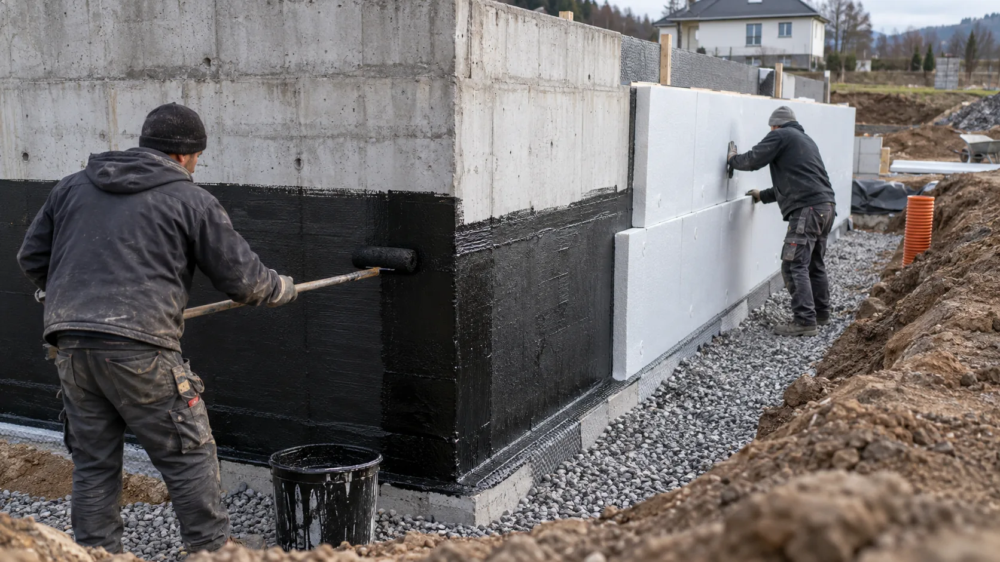
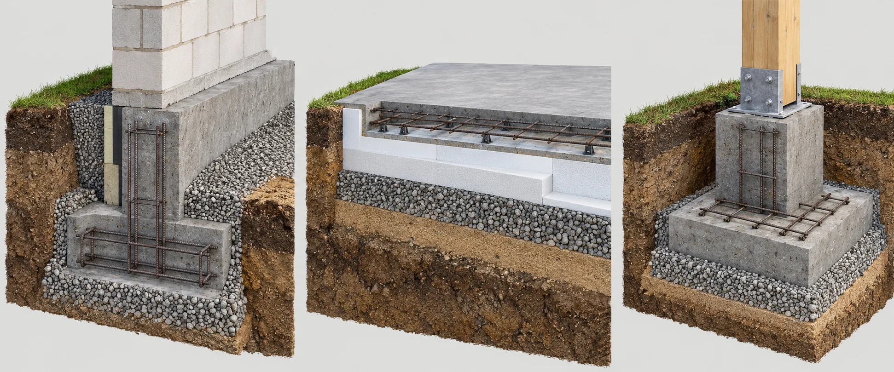

Vundamenditööd ja vundamendi parandused
Teeme vundamenditöid, parandusi ja niiskuskaitset Tallinnas ning Harjumaal.
Vundamendi juures ei ole üht lahendust, mis sobiks igale majale. Taldmiku mõõt, armeerimine, soojustus ja niiskuskaitse peavad lähtuma pinnasest, hoone koormusest ning projektist. Meie töö on teha kokkulepitud etapid korralikult ja õiges järjekorras.
Vundamenditööd uuele ja olemasolevale hoonele
Võtame ette vundamenditöid aluspinna ettevalmistusest, raketisest ja armeerimisest kuni betoonivalu ning olemasoleva vundamendi või sokli parandamiseni. Vajaduse järgi teeme ka hüdroisolatsiooni, soojustuse ja tööks vajaliku avamise.
Kandekonstruktsiooni mõõdud ja lahendus peavad tulema projektist. Kui konstruktsioonis on vajumine või suured praod, soovitame enne ehitamist kaasata pädeva projekteerija või eksperdi.
- rajad eramut, juurdeehitust, garaaži või abihoonet;
- sokkel mureneb või vundamendis on praod;
- keldrisse või seina alumisse ossa jõuab niiskus;
- enne fassaaditöid tuleb sokkel ja vee äravool korda teha.
Kuidas vundamenti tehakse?
Uue vundamendi täpne lahendus tuleb projektist, kuid töö loogika on enamasti sama: tugev aluspind, õigesti paigutatud armatuur ja läbiviigud, kontrollitud valu ning alles seejärel niiskuskaitse ja tagasitäide.

Projekt ja mahamärkimine
Kontrollime mõõdud, kõrgusmärgid, teljed ja ligipääsu. Kandva osa mõõte ei otsustata ehitusplatsil silma järgi.
Kaevetöö ja kandev aluspind
Eemaldatakse nõrk pinnas, rajatakse projektijärgne kaeve ning tihendatakse killustik- või muu ettenähtud alus kihtide kaupa.
Raketis, armatuur ja läbiviigud
Enne valu kontrollitakse raketise mõõte, armatuuri kaitsekihti ning kanalisatsiooni, vee ja elektri läbiviikude asukohti.
Betoonivalu
Betoon paigaldatakse ühtlaselt, tihendatakse ja tasandatakse. Valu ajal ei tohi armatuur ega läbiviigud oma kohalt liikuda.
Järelhooldus ja kontroll
Värsket betooni kaitstakse liiga kiire kuivamise, külma ja sademete eest. Raketis eemaldatakse alles siis, kui betoon on piisavalt tugev.
Hüdroisolatsioon, soojustus ja tagasitäide
Pind valmistatakse ette kasutatava hüdroisolatsioonisüsteemi juhendi järgi. Kaitse- ja soojustusplaadid paigaldatakse enne ettevaatlikku tagasitäidet.
Levinumad vundamendi- ja taldmikutüübid
Taldmik on vundamendi alumine, laiem osa, mis annab hoone koormuse edasi pinnasele. Sobiva tüübi ja mõõdud määrab projekteerija pinnase, koormuse ja hoone ehituse järgi.

Lintvundament
Pidev taldmik jookseb kandvate seinte all. See on eramute puhul levinud lahendus. Olulised on ühtlane kandev alus, nurkade ja liitekohtade armeerimine ning niiskustõke taldmiku ja vundamendiseina vahel.
Plaatvundament
Armeeritud plaat kannab koormuse üle suurema pinna. Soojustus, põrandaküte, kanalisatsioon ja muud läbiviigud tuleb enne valu täpselt paika panna, sest hilisem muutmine on keeruline.
Üksiktaldmik
Eraldi betoontaldmik kannab posti või samba koormust. Seda kohtab varikatuste, terrasside ja karkasslahenduste juures. Taldmiku suurus, sügavus ja ühendus konstruktsiooniga sõltuvad koormusest ja pinnasest.
Aga vaiad? Kui kandev pinnas asub sügaval või vajumisrisk on suur, võib projekt ette näha vaivundamendi. See on erilahendus, mis vajab geoloogilist infot, projekteerimist ja vastavat tehnikat.
Vundamendi parandamine algab põhjuse leidmisest
Pragu, niiske keldrisein või murenev sokkel on sümptom. Enne parandamist tuleb aru saada, kas põhjuseks on sadevesi, puudulik hüdroisolatsioon, külmakerge, pinnase vajumine või lihtsalt kulunud viimistlus.
Kui probleem on niiskus
Vaatame üle maapinna kalde, vihmaveetorude väljaviigu, sokli ühendused ja vundamendi väliskülje. Vajadusel avatakse konstruktsioon lõikude kaupa, puhastatakse pind ning taastatakse hüdroisolatsioon ja kaitsekiht. Drenaaž ei ole automaatne vastus igale niiskusprobleemile.
Kui probleem on pragu või vajumine
Üksik pindmine pragu ja konstruktsiooni liikumine vajavad erinevat lahendust. Kui pragu kasvab, põrand on vajunud või uksed-aknad kiiluvad, tuleb enne kosmeetilist parandust kontrollida konstruktsiooni ja pinnast.
Millest vundamenditöö hind sõltub?
Hinda mõjutavad kaeve sügavus ja ligipääs, väljaveetava pinnase kogus, raketise ja armatuuri maht, betooni kogus, läbiviigud, niiskuskaitse ning tagasitäide. Olemasoleva vundamendi puhul lisandub avamise ja kahjustuse põhjuse hindamine.
Saada päringuga objekti asukoht, projekt või mõõdud ning fotod nii üldvaatest kui probleemkohast. Kui nende põhjal ei saa töömahtu ausalt hinnata, lepime kokku objekti ülevaatuse.
Hüdroisolatsioon, soojustus ja drenaaž töötavad koos
Vee koormus määrab lahenduse
Pinnaseniiskus ja survevesi vajavad erinevat lahendust. Valime aluspinnale ning koormusele sobiva hüdroisolatsioonisüsteemi ja tihendame läbiviigud. Nuppkile võib olla kaitse- või drenaažikiht, kuid ei asenda iseenesest vundamendi hüdroisolatsiooni.
Soojustus ja drenaaž
Pinnasega kontaktis kasutame selleks ettenähtud koormus- ja niiskuskindlat soojustust. Drenaaži puhul peab olema lahendatud vee ärajuhtimine, toru kalle, filter ja kontrollitavus. Ilma toimiva väljavooluta toru paigaldamine ei taga vundamendi kuivust.
Vana vundamendi avamine
Hoone kõrval kaevamise ulatus ja tööjärjekord vajavad kandvuse hindamist. Taldmiku alt pinnast ei eemaldata kontrollimata ning pikka lõiku ei avata korraga pelgalt töö kiirendamiseks. Vajumispragude või tugevdustööde korral on vajalik konstruktsioonispetsialisti lahendus.
Ülevaatuseks: Lisa hoone vanus, vundamendi teadaolev tüüp, fotod pragudest või niiskusest ning olemasolevad joonised. Täpsusta keldri kasutus ja vihmavee praegune ärajuhtimine.
Korduma kippuvad küsimused
Kas parandate vana vundamenti?
Jah, vundamendi paranduste ja sokliga seotud tööde puhul saame aidata pärast seisukorra hindamist.
Kas vundamenditöö vajab projekti?
Mõned tööd võivad vajada projekti või ekspertiisi. Konstruktsiooni muutmisel lähtume vajalikest nõuetest.
Kas teete hüdroisolatsiooni?
Saame teha vundamendi ja sokliga seotud niiskuskaitse ettevalmistust ning kokkulepitud mahus hüdroisolatsiooni.
Kuidas erineb see betoonitöödest?
Betoonitööde leht keskendub valule ja aluspindadele, vundamenditööde leht hoone aluse, sokli ja niiskuskaitse probleemidele.
Kuidas aru saada, kas vundament vajab parandust?
Märgiks võivad olla praod, niiskus, soolajäljed, sokli lagunemine või põranda ja seina liite niiskus. Täpne põhjus selgub ülevaatusel.
Kas ainult sokli värvimisest piisab?
Kui probleem on ainult visuaalne, võib piisata. Kui sokkel laguneb niiskuse tõttu, tuleb enne viimistlust lahendada niiskuse põhjus.
Kas vundamenditööd vajavad kaevamist?
Mitte alati. Mõni parandus on lokaalne ja nähtaval pinnal, kuid hüdroisolatsiooni või drenaaži puhul võib kaevamine olla vältimatu.
Millal on vaja drenaaži?
Drenaaži vajadus sõltub pinnasest, vee liikumisest ja hoone niiskusprobleemist. Seda ei tasu lisada automaatselt ilma põhjuse hindamiseta.
Kas tehtud töödele kehtib garantii?
Jah. RK Meistrid OÜ tehtud ehitus- ja viimistlustöödele kehtib 3-aastane garantii. Konkreetse töö sisu ja kokkulepitud tingimused fikseeritakse hinnapakkumises.
Milliste töödega vundamenditööd tavaliselt seostuvad?
Vundamenditööd seostuvad tihti hoone alumise osa niiskuskaitse, betooni ja fassaadi üleminekuga. Kui töö hõlmab konstruktsiooni parandust, on oluline siduda see betoonitööde ja aluspinna taastamisega; hoone välisilme ja sokli kaitse puhul jätkub töö sageli fassaadipinna paranduse või viimistlusega. Enne uut lahendust võib vaja minna ka vana kahjustunud osa eemaldamist.